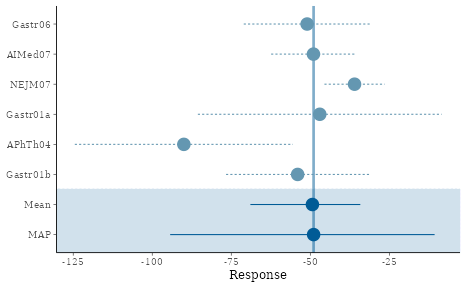
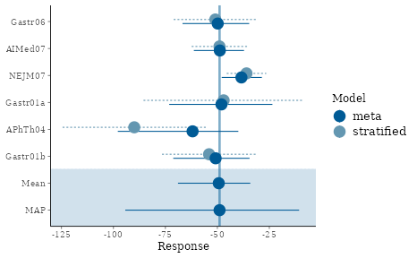
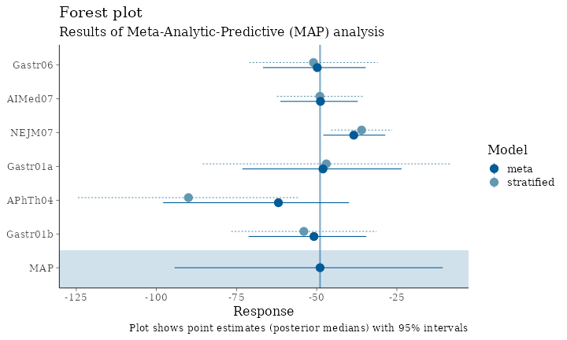
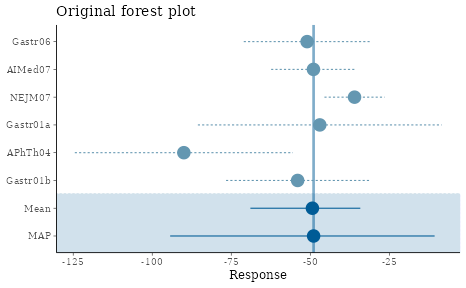

Customizing RBesT plots
Baldur Magnusson
2023-02-20
Source:vignettes/customizing_plots.Rmd
customizing_plots.RmdIntroduction
This vignette demonstrates how to work with the forest plot provided
by the RBesT package. We show how to modify the default
plot and, for advanced users, how to extract data from a ggplot object
to create a new plot from scratch. Finally we recreate plots from a case
study presented in the training materials.
For more general information on plotting in R, we recommend the following resources:
-
bayesplot
- library on which the
RBesTplotting functionality is built - ggplot2 - powerful library for graphics in R
- R Cookbook - Graphs - general reference for R and graphics in R
# Load required libraries
library(RBesT)
library(ggplot2)
library(dplyr)
library(tidyr)
library(bayesplot)
# Default settings for bayesplot
color_scheme_set("blue")
theme_set(theme_default(base_size=12))
# Load example gMAP object
set.seed(546346)
map_crohn <- gMAP(cbind(y, y.se) ~ 1 | study,
family=gaussian,
data=transform(crohn, y.se=88/sqrt(n)),
weights=n,
tau.dist="HalfNormal", tau.prior=44,
beta.prior=cbind(0,88))
print(map_crohn)## Generalized Meta Analytic Predictive Prior Analysis
##
## Call: gMAP(formula = cbind(y, y.se) ~ 1 | study, family = gaussian,
## data = transform(crohn, y.se = 88/sqrt(n)), weights = n,
## tau.dist = "HalfNormal", tau.prior = 44, beta.prior = cbind(0,
## 88))
##
## Exchangeability tau strata: 1
## Prediction tau stratum : 1
## Maximal Rhat : 1
## Estimated reference scale : 88
##
## Between-trial heterogeneity of tau prediction stratum
## mean sd 2.5% 50% 97.5%
## 14.50 10.10 1.09 12.20 41.10
##
## MAP Prior MCMC sample
## mean sd 2.5% 50% 97.5%
## -49.8 19.3 -93.2 -48.3 -11.5Forest plot
The default forest plot is a “standard” forest plot with the Meta-Analytic-Predictive (MAP) prior additionally summarized in the bottom row:
forest_plot(map_crohn)
We can also include the model-based estimates for each study, and add a legend to explain the different linetypes.
forest_plot(map_crohn, model="both") + legend_move("right")
We can modify the color scheme as follows (refer to
help(color_scheme_set) for a full list of themes):
# preview a color scheme
color_scheme_view("mix-blue-red")
# and now let's use it
color_scheme_set("mix-blue-red")
forest_plot(map_crohn)
color_scheme_set("gray")
forest_plot(map_crohn)
The point size can be modified and the vertical line removed:
color_scheme_set("blue")
forest_plot(map_crohn, size=0.5, alpha=0)
Presentation-ready plots
If a plot is to be used for a presentation or in a document such as the study protocol, it is recommended to use sufficiently large font sizes (e.g. about as large as the fonts on the same slide or in the same document) and that elements of the plot are clearly visible. Here we show a few simple statements that can be used for this purpose.
# adjust the base font size
theme_set(theme_default(base_size=16))
forest_plot(map_crohn, model="both", est="MAP", size=1) + legend_move("right") +
labs(title="Forest plot", subtitle="Results of Meta-Analytic-Predictive (MAP) analysis",
caption="Plot shows point estimates (posterior medians) with 95% intervals")We also recommend saving plots explicitly with the
ggsave function, which allows control (and hence
consistency) of image size. Note that the font size will be enforced in
the requested size; a small image with large font size may result in too
little space for the plot itself. The image is sized according to the
golden cut (\(\phi=\frac{1+\sqrt5}{2} \approx
1.62\)) which is perceived as a pleasing axis ratio. Png is the
recommended image file type for presentations and study documents.
Advanced topics
Extract data from a ggplot object
In some situations, desired modifications to a plot provided by
RBesT may not be possible given the returned
ggplot object. If a truly tailored plot is desired, the
user must extract the data from this object and create a graph from
scratch using ggplot functions. Recall the original forest
plot:

Suppose we wish to use different symbols for the meta/stratified point estimates and a different linestyle for the vertical line. A tailored plot can be created as follows.
# Extract the data from the returned object
fp_data <- forest_plot(map_crohn)$data
print(fp_data, digits=2)## mean sem median low up study model
## Gastr06 -51 10.2 -51 -71 -30.9 Gastr06 stratified
## AIMed07 -49 6.8 -49 -62 -35.6 AIMed07 stratified
## NEJM07 -36 4.9 -36 -46 -26.5 NEJM07 stratified
## Gastr01a -47 19.7 -47 -86 -8.4 Gastr01a stratified
## APhTh04 -90 17.6 -90 -124 -55.5 APhTh04 stratified
## Gastr01b -54 11.6 -54 -77 -31.4 Gastr01b stratified
## theta_resp_pred -50 19.3 -48 -93 -11.5 MAP meta
## theta_resp -50 8.4 -49 -69 -34.1 Mean meta
# Use a two-component map mixture to compute the vertical line location
map_mix <- mixfit(map_crohn, Nc=2)
# Finally compose a ggplot call for the desired graph
ggplot(fp_data, aes(x=study, y=median, ymin=low, ymax=up, linetype=model, shape=model)) +
geom_pointrange(size=0.7, position=position_dodge(width=0.5)) +
geom_hline(yintercept=qmix(map_mix, 0.5), linetype=3, alpha=0.5) +
coord_flip() + theme_bw(base_size=12) + theme(legend.position="None") +
labs(x="", y="Response", title="Modified forest plot")
Design plots a clinical trial
Here we show how to create outcome and operating characteristic plots for a clinical trial comparing a developmental drug against placebo. The primary endpoint is binary (with event probability \(p\)) and we use an informative prior for the placebo arm event rate. The experimental drug is believed to lower the event rate, and the criteria for study outcome are hence as follows:
\[ \begin{align*} \textrm{Criterion 1:} \Pr(p_{trt} / p_{pbo} < 1) &> 0.9\\ \textrm{Criterion 2:} \Pr(p_{trt} / p_{pbo} < 0.5) &> 0.5 \end{align*} \]
The outcome is success (GO) if both criteria are satisfied, futility (STOP) if neither is satisfied, and indeterminate if only one or the other is satisfied.
We now create a plot that shows the study conclusion, given any combination of outcomes on the two treatment arms.
# Define prior distributions
prior_pbo <- mixbeta(inf1=c(0.60, 19, 29), inf2=c(0.30, 4, 5), rob=c(0.10, 1, 1))
prior_trt <- mixbeta(c(1, 1/3, 1/3))
# Study sample size
n_trt <- 50
n_pbo <- 20
# Create decision rules and designs to represent success and futility
success <- decision2S(pc=c(0.90, 0.50), qc=c(log(1), log(0.50)), lower.tail=TRUE, link="log")
futility <- decision2S(pc=c(0.10, 0.50), qc=c(log(1), log(0.50)), lower.tail=FALSE, link="log")
design_suc <- oc2S(prior_trt, prior_pbo, n_trt, n_pbo, success)
design_fut <- oc2S(prior_trt, prior_pbo, n_trt, n_pbo, futility)
crit_suc <- decision2S_boundary(prior_trt, prior_pbo, n_trt, n_pbo, success)
crit_fut <- decision2S_boundary(prior_trt, prior_pbo, n_trt, n_pbo, futility)
# Create a data frame that holds the outcomes for y1 (treatment) that define success and futility,
# conditional on the number of events on y2 (placebo)
outcomes <- data.frame(y2=c(0:n_pbo), suc=crit_suc(0:n_pbo), fut=crit_fut(0:n_pbo), max=n_trt)
outcomes$suc <- with(outcomes, ifelse(suc<0, 0, suc)) # don't allow negative number of events
# Finally put it all together in a plot.
o <- 0.5 # offset
ggplot(outcomes, aes(x=y2, ymin=-o, ymax=suc+o)) + geom_linerange(size=4, colour="green", alpha=0.6) +
geom_linerange(aes(ymin=suc+o, ymax=fut+o), colour="orange", size=4, alpha=0.6) +
geom_linerange(aes(ymin=fut+o, ymax=max+o), colour="red", size=4, alpha=0.6) +
annotate("text", x=c(2,14), y=c(36,8), label=c("STOP", "GO"), size=10) +
scale_x_continuous(breaks=seq(0,n_pbo,by=2)) +
scale_y_continuous(breaks=seq(0,n_trt,by=4)) +
labs(x="Events on placebo", y="Events on treatment", title="Study outcomes") +
coord_flip() + theme_bw(base_size=12)
We can also use the design functions that were already derived
(design_suc and design_fut) to compute
operating characteristics.
# Define the grid of true event rates for which to evaluate OC
p_trt <- seq(0, 0.5, length=200)
p_pbo <- c(0.35, 0.40, 0.45, 0.50)
# Loop through the values for placebo and compute outcome probabilities
oc_list <- lapply(p_pbo, function(x) {
p_go <- design_suc(p_trt, x)
p_stop <- design_fut(p_trt, x)
data.frame(p_trt, p_pbo=x, Go=p_go, Stop=p_stop, Indeterminate=1-p_go-p_stop)
})
# The above returns a list, so we bind the elements together into one data frame
oc <- bind_rows(oc_list)
# And convert from wide to long format
oc <- gather(oc, "Outcome", "Probability", 3:5)
oc$facet_text <- as.factor(paste("True placebo rate = ", oc$p_pbo, sep=""))
# Finally we are ready to plot
ggplot(oc, aes(x=p_trt, y=Probability, colour=Outcome, linetype=Outcome)) +
facet_wrap(~facet_text) + geom_line(size=1) +
scale_colour_manual(values=c("green", "orange", "red"), name="Outcome") +
scale_linetype(guide=FALSE) +
geom_hline(yintercept=c(0.1, 0.8), linetype=3) +
scale_y_continuous(breaks=seq(0, 1, by=0.2)) +
labs(x="True event rate for treatment", y="Probability", title="Operating Characteristics") +
theme_bw(base_size=12) ## R version 4.2.2 (2022-10-31)
## Platform: x86_64-pc-linux-gnu (64-bit)
## Running under: Ubuntu 22.04.1 LTS
##
## Matrix products: default
## BLAS: /usr/lib/x86_64-linux-gnu/openblas-pthread/libblas.so.3
## LAPACK: /usr/lib/x86_64-linux-gnu/openblas-pthread/libopenblasp-r0.3.20.so
##
## locale:
## [1] LC_CTYPE=C.UTF-8 LC_NUMERIC=C LC_TIME=C.UTF-8
## [4] LC_COLLATE=C.UTF-8 LC_MONETARY=C.UTF-8 LC_MESSAGES=C.UTF-8
## [7] LC_PAPER=C.UTF-8 LC_NAME=C LC_ADDRESS=C
## [10] LC_TELEPHONE=C LC_MEASUREMENT=C.UTF-8 LC_IDENTIFICATION=C
##
## attached base packages:
## [1] stats graphics grDevices utils datasets methods base
##
## other attached packages:
## [1] bayesplot_1.10.0 tidyr_1.3.0 dplyr_1.1.0 ggplot2_3.4.1
## [5] RBesT_1.6-5 knitr_1.42
##
## loaded via a namespace (and not attached):
## [1] Rcpp_1.0.10 mvtnorm_1.1-3 prettyunits_1.1.1
## [4] ps_1.7.2 assertthat_0.2.1 rprojroot_2.0.3
## [7] digest_0.6.31 utf8_1.2.3 R6_2.5.1
## [10] backports_1.4.1 stats4_4.2.2 evaluate_0.20
## [13] highr_0.10 pillar_1.8.1 rlang_1.0.6
## [16] callr_3.7.3 jquerylib_0.1.4 checkmate_2.1.0
## [19] rmarkdown_2.20 pkgdown_2.0.7 labeling_0.4.2
## [22] textshaping_0.3.6 desc_1.4.2 stringr_1.5.0
## [25] loo_2.5.1 munsell_0.5.0 compiler_4.2.2
## [28] xfun_0.37 rstan_2.21.8 pkgconfig_2.0.3
## [31] systemfonts_1.0.4 pkgbuild_1.4.0 rstantools_2.2.0
## [34] htmltools_0.5.4 tidyselect_1.2.0 tibble_3.1.8
## [37] gridExtra_2.3 codetools_0.2-18 matrixStats_0.63.0
## [40] fansi_1.0.4 withr_2.5.0 crayon_1.5.2
## [43] grid_4.2.2 jsonlite_1.8.4 gtable_0.3.1
## [46] lifecycle_1.0.3 magrittr_2.0.3 StanHeaders_2.21.0-7
## [49] scales_1.2.1 RcppParallel_5.1.6 cli_3.6.0
## [52] stringi_1.7.12 cachem_1.0.6 farver_2.1.1
## [55] fs_1.6.1 bslib_0.4.2 ragg_1.2.5
## [58] generics_0.1.3 vctrs_0.5.2 Formula_1.2-4
## [61] tools_4.2.2 glue_1.6.2 purrr_1.0.1
## [64] processx_3.8.0 parallel_4.2.2 fastmap_1.1.0
## [67] yaml_2.3.7 inline_0.3.19 colorspace_2.1-0
## [70] memoise_2.0.1 sass_0.4.5